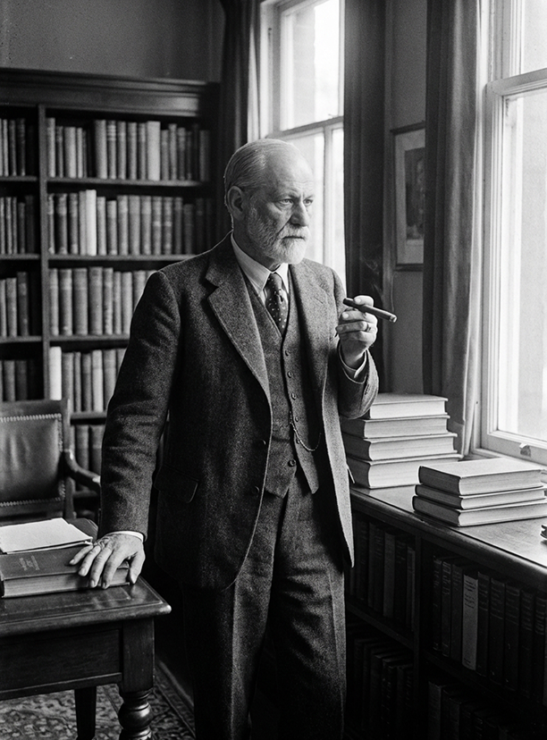

Design System v3.0
昨日的世界
杂志画报风 · Magazine Editorial Style
Colors 色彩
Background 背景色
Canvas
#F8F6F3
Surface
#FFFFFF
Warm
#FAF8F5
Cream
#F5F2ED
Muted
#EDEAE5
Inverse
#1A1A1A
Foreground 文字色
Primary
#1A1A1A
Secondary
#4A4A4A
Tertiary
#7A7A7A
Muted
#9A9A9A
Disabled
#BEBEBE
Accent 强调色
Gold
#C9A962
Gold Dark
#A68B4B
Gold Light
#E8DCC8
Gold Subtle
#F5F0E5
Semantic 语义色
Blue
#4A6FA5
Blue Light
#E8EEF5
Burgundy
#8B3A3A
Burgundy Light
#F5E8E8
Sage
#5A7A5A
Sage Light
#E8F0E8
Typography 字体
Font Families 字体栈
Playfair Display + Noto Serif SC
用于标题、引用、装饰性文字 · ABCDEfghij 昨日的世界
Inter + Noto Sans SC
用于正文、界面元素 · ABCDEfghij 昨日的世界
Display 展示标题
昨日的世界
Headings 标题
霍夫曼斯塔尔
与茨威格的交集
Special Styles 特殊样式
诗人 · 剧作家
Hugo von Hofmannsthal
01
Icons 图标
Google Material Symbols Rounded
使用可变字体，支持 FILL、wght、GRAD、opsz 四个轴的调节
Icon Sizes 尺寸
.icon-sm · 18px
.icon-md · 24px
.icon-lg · 32px
.icon-xl · 48px
Buttons 按钮
Variants 变体
With Icons 带图标
Sizes 尺寸
Tags 标签
Variants 变体
Semantic Tags 语义标签
Cards 卡片
Person Card 人物卡片
诗人 · 剧作家
霍夫曼斯塔尔
Hugo von Hofmannsthal

诗人
里尔克
Rainer Maria Rilke

雕塑家
罗丹
Auguste Rodin

精神分析学家
弗洛伊德
Sigmund Freud
Quote Card 引用卡片
一个中学生竟会创造出这样美的艺术，有这样的远见，思想这么深刻。他的存在本身就清楚地表明，在我们这个时代同样可以产生诗人。
——《昨日的世界·上世纪的学校》
Timeline Card 时间线卡片
第一次"相遇"——在咖啡馆听闻其名
茨威格在中学时代，便在维也纳的咖啡馆里听到文学圈热议一个16岁的天才诗人。当时没有人相信，一个还穿着中学校服的少年，能写出如此深刻、如此完美的诗句。
——《昨日的世界·上世纪的学校》
Section Header 章节头
与茨威格的交集
Avatar 头像
Sizes 尺寸

SM · 32px
MD · 48px
LG · 64px
XL · 80px